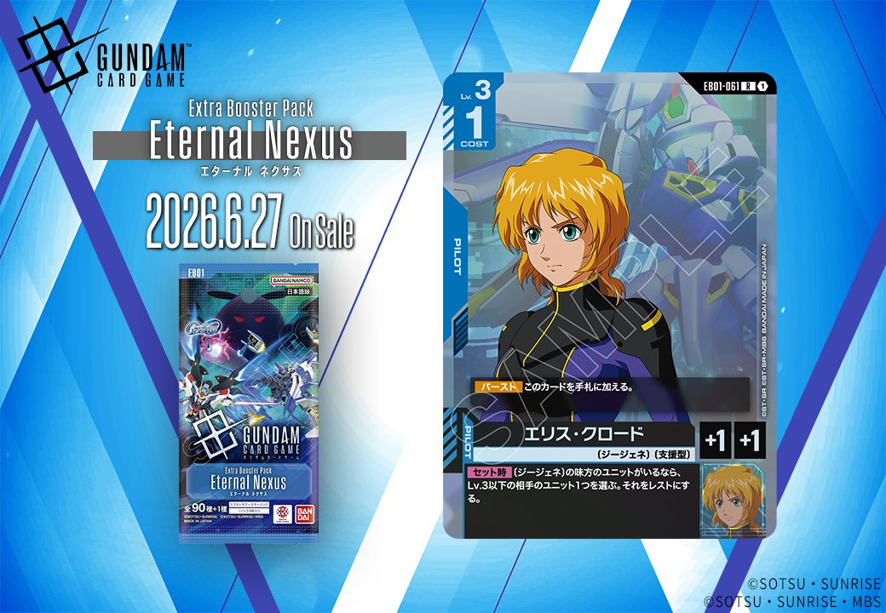
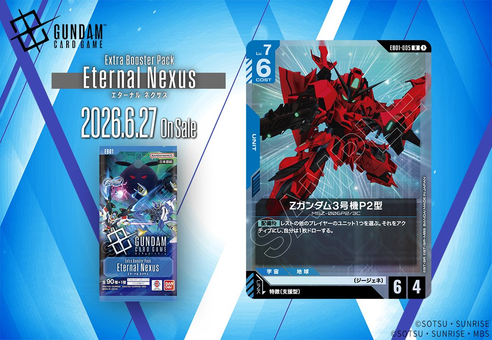

2026年6月27日発売のエクスパンションブースター第1弾「Eternal Nexus（エターナル ネクサス）」から、青のPILOT「エリス・クロード」と、特徴に支援型を持つPILOTとリンクする青のUNIT「Zガンダム3号機P2型」の2枚が収録されます。PILOTとUNITのリンクシステムを軸にした、青の新たな戦術展開が期待できるカードです。

エリス・クロード (EB01-061)
| 色 | 青 | タイプ | PILOT |
| Lv | 3 | コスト | 1 |
| 補正 AP | 1 | 補正 HP | 1 |
| 特徴 | 〔ジージェネ〕、〔支援型〕 | ||
効果: 【バースト】このカードを手札に加える。【セット時】〔ジージェネ〕の味方のユニットがいるなら、Lv.3以下の相手のユニット1つを選ぶ。それをレストにする。
エリス・クロードは〔ジージェネ〕シナジーを活かすコスト1のパイロットカード。【バースト】でハンドアドを確保しつつ、【セット時】に〔ジージェネ〕ユニットがいればLv.3以下の相手ユニットをレストにできるため、テンポ面で貢献できる。 AP1/HP1と戦闘力は低いが、コスト1で手札補充とレスト効果を持つため、〔ジージェネ〕デッキのサポートカードとして採用を検討できそうだ。



Zガンダム3号機P2型 (EB01-005)
| 色 | 青 | タイプ | UNIT |
| Lv | 7 | コスト | 6 |
| AP | 6 | HP | 4 |
| 特徴 | 〔ジージェネ〕 | ||
| リンク条件 | 特徴に支援型を持つPILOT | ||
効果: 【配備時】レストの他のプレイヤーのユニット1つを選ぶ。それをアクティブにし、自分は1枚ドローする。
COST6で6/4という標準的なスタッツを持つLv.7ユニット。配備時に相手のレストユニットをアクティブにして1ドローする効果は、相手の行動を制限しつつ手札補充できる点で青らしいコントロール要素を持つ。 支援型パイロットとリンク可能で、ジージェネ特徴を活かしたデッキ構築が期待できるが、相手にレストユニットがいないと効果を発揮できない点には注意が必要。


関連カード
-
 ハロ(EB01-017)NEW青系 — 同色・共通特徴: ジージェネ（新カード）
ハロ(EB01-017)NEW青系 — 同色・共通特徴: ジージェネ（新カード） -
 開発経路図の解放(ST10-014)NEW青系 — 同色・共通特徴: ジージェネ（新カード）
開発経路図の解放(ST10-014)NEW青系 — 同色・共通特徴: ジージェネ（新カード） -
 ルーナ・マナ&キャリー・ベース(ST10-016)NEW青系 — 同色・共通特徴: ジージェネ（新カード）
ルーナ・マナ&キャリー・ベース(ST10-016)NEW青系 — 同色・共通特徴: ジージェネ（新カード） -
 フルアーマー・ガンダム(サンダーボルト版)(EX)(EB01-009)NEW青系 — 同色・共通特徴: ジージェネ（新カード）
フルアーマー・ガンダム(サンダーボルト版)(EX)(EB01-009)NEW青系 — 同色・共通特徴: ジージェネ（新カード） -
 スーパーガンダム(ST10-004)NEW青系 — 同色・共通特徴: ジージェネ（新カード）
スーパーガンダム(ST10-004)NEW青系 — 同色・共通特徴: ジージェネ（新カード） -
 マーク・ギルダー(ST10-012)NEW白系 — リンク対象（支援型 PILOT）（新カード）
マーク・ギルダー(ST10-012)NEW白系 — リンク対象（支援型 PILOT）（新カード） -
 レイジ(EB01-066)NEW緑系 — リンク対象（支援型 PILOT）（新カード）
レイジ(EB01-066)NEW緑系 — リンク対象（支援型 PILOT）（新カード） -
 ダリル・ローレンツ(EB01-070)NEW白系 — リンク対象（支援型 PILOT）（新カード）
ダリル・ローレンツ(EB01-070)NEW白系 — リンク対象（支援型 PILOT）（新カード） -
エリス・クロード(EB01-061)NEW青系 — リンク対象（支援型 PILOT）（新カード）